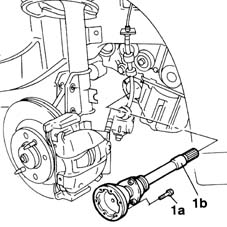

2710A30 intermediate drive shaft - r + r with r/h drive shaft removed
- Path
- Procedures > 27 AXLE > 2710 FRONT AXLE > 2710A drive shafts and joints > 2710A30 intermediate drive shaft - r + r with r/h drive shaft removed
- Kind
- repair procedure (removal / refitting; the operation number is the code)
- Applies to
- engines: 1.9 JTD 8V; all production periods
- Interactive page
- https://sloeber94.github.io/elrnDB-fMltpl/en/#/2891563
Applies to: engines: 1.9 JTD 8V; all production periods
 Removing
Removing
 Refitting
Refitting1. Undo the bolts (1a) and remove the intermediate shaft (1b).

Applies to: engines: 1.9 JTD 8V; all production periods
Refitting
RemovingFit the intermediate shaft and secure it with its fixing bolts.